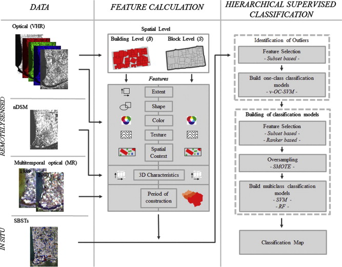
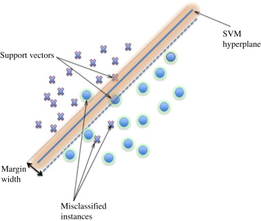

6 Classification I
6.1 Summary
In this week, we will look into classification projects in remote sensing. Classification is one of the primary tasks in remote sensing. It can be done based on their spectral, spatial, or temporal characteristics.
6.1.1 Classification in Remote Sensing
There are many applications in remote sensing utilising classification techniques. Here are some example projects:
- Land Cover Classification: It aims to categorise the earth’s surface into different classes, such as urban areas, forests, water bodies, agriculture, and wetlands, to monitor changes in land use, assess environmental impacts, or develop land use policies.
- Urban Change Detection: A task that identifies changes in urban areas, such as urban expansion, urban green space loss, and land use alterations, to inform urban planning, assess the impact of urbanization, and monitor city growth.
- Agricultural Monitoring: A project that classifies agricultural lands by crop type or irrigation status, assesses crop health, and monitors agricultural practices, to support food security, optimize resource use, and inform agricultural policies.
- Forest Monitoring and Illegal Logging: A project that classifies forest types, monitors forest health, and detects deforestation, to support sustainable forest management and climate change mitigation efforts.
Next, we will walk through machine learning models for classification and clustering tasks.
6.1.2 Supervised Learning Techniques (Classification)
- Classification and regression trees (CART)

Source: geeksforgeeks
- Overview: CART is a decision tree-based learning algorithm with multiple decision rules, which are derived from the data features. It can be used for both classification and regression tasks.
- Things to consider:
- Gini impurity: We use the Gini impurity at each branch to split the nodes further and models are selected from the lowest impurity.
\[Gini\ impurity= 1-(probability\ of\ yes)^2-(probability\ of\ no)^2\] - Overfitting: It can be easily to face with overfitting issues. Some techniques to solve this issue is to limiting how trees grow (e.g. a minimum number of pixels in a leaf, 20 is often used) and weakest link pruning.
- Gini impurity: We use the Gini impurity at each branch to split the nodes further and models are selected from the lowest impurity.
- Pros: able to handle both continuous and categorical variables, interpretability through its tree structure, and robustness to outliers.
- Cons: overfitting may occur, especially with high-dimensional data, and may require parameter tuning and pruning to optimize its performance
- Random Forests

Source: Science Direct
Overview: An ensemble learning method that combines multiple decision trees to improve classification or regression performance. The method is based on the concept of bagging (Bootstrap Aggregating), where each decision tree is trained on a random subset of the training data with replacement. The answer comes from voting system (majority decision).
Things to consider:
- Number of trees: More trees generally improve the model’s performance but may increase computational costs.
- Tree depth: Controlling tree depth can help balance model complexity and generalization.
- Number of features to consider at each split: This parameter affects the diversity of individual trees and can impact the model’s performance.
Pros: It is known for its robustness to overfitting, ability to handle high-dimensional data, and good performance in both classification and regression tasks in compared with single decision trees.
Cons: It is difficult to interpret and have longer prediction times due to the combination of multiple trees.
- Support Vector Machine (SVM)

Overview: a supervised learning algorithm with the goal to find an optimal hyperplane that separates different classes in the feature space, maximizing the margin between classes. SVM can also handle both linear and non-linear relationships between features using kernel functions. There is also an ability to allow some misclassification to occur (soft margin).
Things to consider:
- Regularization parameter (C): A larger value of C leads to a smaller margin but fewer errors, while a smaller value allows for a larger margin but more errors.
- Kernel coefficient (Gamma): It controls the shape of the decision boundary and the degree of non-linearity in the model. Low gamma will result in big radius for classified points, vice versa.
- Kernel function: It determines how the input features are transformed. There are many kernel functions, such as linear, polynomial and RBF. It can significantly impact the performance of the SVM model. Note that linear and RBF kernel are popular choices for linear and non-linear problems, respectively.
Pros: SVM can handle linear and non-linear boundaries using different kernel functions.Moreover, SVM is less prone to overfitting, especially when using an appropriate regularization parameter.
Cons: As its complexity, it is challenging to interpret the model, especially with non-linear kernels. Furthermore, SVM can be computationally expensive, particularly with large datasets and non-linear kernels.
6.2 Applications
In this section, we will give examples of classification projects in remote sensing with an analysis.
- Estimation of seismic building structural types using multi-sensor remote sensing and machine learning techniques (Geiß et al. 2015)
Summary: This research aims to classify seismic building structural types (SBSTs) in earthquake-prone regions from multi-sensor remote sensing data. This research was conducted by using large parts of Padang city in Indonesia as the study areas. Data used in this project include a multispectral IKONOS image with 4 m of spatial resolution for the 4 multispectral bands, multitemporal Landsat data with 30 m spatial resolution for the 7 multispectral bands and height information from a digital surface model (DSM). The SBSTs classification models with 30 extracted features resulted in an overall accuracy of 72% and 75% for using random forest and SVM, respectively.
Methodology: A set of features is derived from remote sensing data at two different spatial levels, building and block level. Then, researchers chose to conduct outlier identification by using one-class support vector machines (OC-SVM) to exclude unreliable data. After that, they classified building by using hierarchical supervised classification. The machine learning models used in this classification were support vector machine (SVM) and random forests.
Comments: It is a good and useful research that demonstrated the potential of using machine learning to classify building structural types based on remote sensing data. Many features were extracted for using in classification models. The comparison of the performance between random forest and SVM was also shown in the results. Possible improvements may include applying image enhancement techniques and other data pre-processing techniques before training models. Texture analysis probably help in this research.
6.3 Reflection
- Content:
- There are many machine learning models taught in this week. As a data scientist, I have already used many models in many projects before. However, I sometimes forgot some implementation steps, since we have libraries, such as sklearn in python. The use of model is just typing one line of code and the magic happens. So, it is good to review all of the concepts of each model again. Moreover, knowing pros and cons of each model will help improve the quality of machine learning project design. Sometimes, I focused on only accuracy too much and forget to think about interpretability of models.
- In term of concepts, I found that ensembling and bagging techniques in random forest model are quite interesting, since it could be seen that the winner of many machine learning competitions also use these techniques. I wonder if we can use the concept of ensembling with many SVM models and how much the performance will increase resulting from adding this technique. I expect that it will slightly increase the performance, however, it will take much longer time for computation. There was also one research to support my idea (Claesen 2014).
- Applications:
- Currently, I am interested in researching about damage building assessment from satellite imagery. Therefore, this research looks interesting to me, since it also conducted building classification. The workflow in this project also involved many techniques before achieving the promising accuracy.
- For specific technique, I used SVM as a classification model for many projects, but I have not used one-class svm (OC-SVM) for identifying outliers, since there are also many techniques for excluding outliers, such as using mean and standard deviation method or isolation forest (Liu, Ting, and Zhou 2008). So, it is good to explore the performance of OC-SVM compared to other methods.